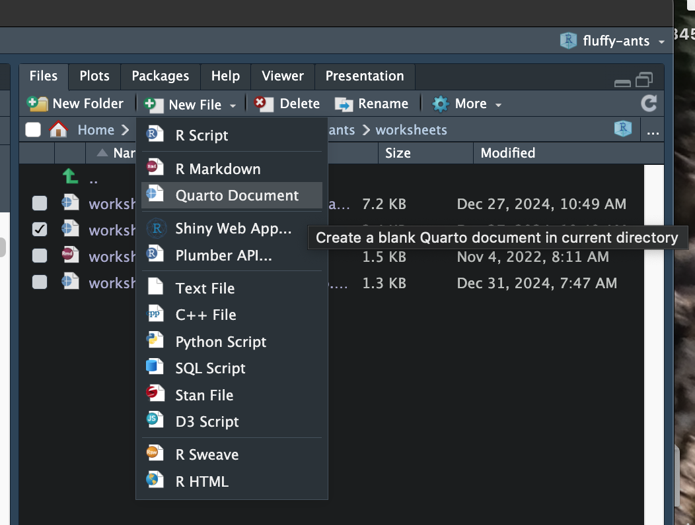

Introduction to Quarto
In this set of notes, you will begin your Quarto journey.
Creating a New Quarto Document
To create a new Quarto document, go to the directory where you want to put the file and click New File under the “Files” tab, and select Quarto Document. In the popup box, give your new document a name. Quarto documents have the extension .qmd.
YAML: The Stuff Between the Sets of Three Dashes
YAML (pronounced Yam-el) is an acronym for “Yet Another Markup Language”. It constitutes the metadata for your Quarto document. Not only is it informational, but it also helps format your document. The metadata in your newly created Quarto document looks something like this:
---
title: "hello-world"
format: html
---These are called key-value pairs. The “keys” are “title” and “format”. The value associated with title is “hello-world” (by default this will be whatever you named the document), and the value associated with format is “html”.
Rendering the Document
Click the Render button above your Quarto document. This will render the quarto document (i.e., the QMD file) into a human-consumable format—in this case an HTML file that can be opened in a web browser. The rendered document should also open in your “Viewer” tab in RStudio. If you go back and look at yuor project directory, you should also see a new HTML file has been created. (In my case, this was “hello-world.html”.) This can be opened in a web-browser; try it by double-clicking the HTML file.
Update the YAML
Our document is pretty boring—it only has a title that is the same as our file name. Let’s edit the YAML to see how we can add to our document’s metadata. First you can update the title value to whatever you want the title of your document to be:
---
title: "My First Quarto Document"
format: html
---We can also add additional metadata. Here we add a subtitle, author(s), and date.
---
title: "My First Quarto Document"
subtitle: "Hello World"
author: "Andy and Iggy"
date: today
format: html
---Once you have edited and added in the new YAML keys and values, re-click the Render button.
Notice
All the YAML keys and special values (e.g. html) are all lower case! Special values do not need quotes. All other strings need quotes.
The keys “subtitle”, “author”, and “date” are all keys that Quarto recognizes. Some of these keys are more global (e.g., title, author) and work across different formats. Others are unique to the type of document format. For example, some keys work with HTML formatted documents and others work with PDF formatted documents. You can learn about some of the YAML that works with HTML formatted documents here: https://quarto.org/docs/output-formats/html-basics.html
Autopopulating the Date
We can auto-populate the date: key in our document’s YAML by including “today” rather than a specifc date. The date will update to the current date when you render the document.
---
title: "My First Quarto Document"
subtitle: "Hello World"
author: "Andy and Iggy"
date: today
format: html
---Adding Content
The primary part of a Quarto document is not the YAML, but the actual body of the document. Things like headings, text, analysis, and other content are part of the body of the Quarto document. This is all added BELOW the sets of three dashes.
Let’s add some text to our document.
---
title: "My First Quarto Document"
subtitle: "Hello World"
author: "Andy and Iggy"
date: today
format: html
---
Here is some text for my document. Notice that it is below the YAML.
Here is a new paragraph. A line space indicates that we start a new paragraph.WORKFLOW
As you add content to your QMD file you should save it often. To see how the new content looks, you need to render the document. Rendering the document also typically saves the added content to the QMD file. So your workflow is: Add content –> Render.
Headings
In an HTML document there are six levels of headings. You can think about headings as denoting sections and subsections (and sub-sub-sections, etc.) in a document.
Headings need to be on their own line and the star of the line is one or more hashtags. A level-1 heading uses one hashtag, a level-2 heading uses two hashtags. A level-3 heading uses three hastags. Etc. You also need a blank line above and below the heading line.
---
title: "My First Quarto Document"
subtitle: "Hello World"
author: "Andy and Iggy"
date: today
format: html
---
# Hello
This is a level-1 heading. Note the blank line above and below the heading.
## World
This is a level-2 heading. Note the heading starts with two hashtags.Bold and Italics
Text can be bolded or italicized by adding asterisks around the text. A single set of asterisks is placed around text that you want to italicize and a double set placed around text you want to bold. (Note: You can also use underscores to italicize or bold things in a similar manner.)
---
title: "My First Quarto Document"
subtitle: "Hello World"
author: "Andy and Iggy"
date: today
format: html
---
# Bold and Italics Text
Here is *italicized text*. And here is **bold text**.
We can also use undercores to create _italicized text_ or __bold text__.
Combinations of asterisks and underscore create __*bold, italicized text*__.Other Fun Content
You can also add content such as unordered (i.e., bulleted) lists, ordered (i.e., numbered) lists, hyperlinks, images, footnotes and blockquotes. To see how to do check out the Markdown Basics page.
Source versus Visual Editor
Above the QMD document is a set of buttons named “Source” and “Visual”. These buttons change the editong mode of the document. By default the “Source” mode is used. Clicking the “Visual” button will switch to the visual editing mode. The visual editing mode is more like Word or Google Docs—there is a toolbar to select things like bold/italics, etc.
You can use whatever editor you want, but In my experience, novices like to use the visual editor because it is closer to other editing programs they have used before. Experts tend to use the source editor. Not only is it faster for them, but as your documents become more complex, the visual editor has many shortcomings.
For that reason, I encourage you to become proficient with the source editor. To further encourage this all of the instruction I give will be in the source editor.
Back to the YAML: Indentation for Options
Now that you have added a few headings and some text to youe QMD file, let’s include some additional YAML. The new YAML will add a table-of-contents to your rendered document. Note that the format: html key-value pair is now separated—html is on a new line and indented.
---
title: "My First Quarto Document"
subtitle: "Hello World"
author: "Andy and Iggy"
date: today
format:
html:
toc: true
toc-location: left
---As you try out different YAML it is important to pay attention to the indentation. Keys that are indented have to be 2 or 4 spaces (generally 1 tab). The indentation is a way of denoting options for different keys. For example, consider the following YAML:
Now the value “html” is indented (2 spaces) from the “format” key. This is because we have now added additional keys that set options in our HTML document. Namely adding a table of contents (“toc: true”) and a location for that table of contents (“toc-location: left”). These keys are indented an additional two spaces to indicate they are options for the “html” key.
IMPORTANT
The spacing in the YAML really matters a lot. If you don’t have the correct spacing, the document will not render.
You can think of the indentation as indicating the hierarchical structure of elements withing the YAML. In our example the key “html” is a subcomponent of the “format” key. And, the “toc” and “toc-location” keys are subcomponents of the “html” key.
Here is a more complex example. Don’t worry what the new keys do, but instead think about the heirarchy. Which keys are subcomponents of which other keys?
---
title: "My First Quarto Document"
subtitle: "Hello World"
author: "Andy and Iggy"
date: today
format:
html:
toc: true
toc-location: left
html-math-method:
method: mathjax
pdf:
mainfont: "Open Sans"
---Code Chunks: Integrating R Syntax into Your QMD Document
The real bang-for-your-buck of wrting in a Quarto document is that you can integrate your R syntax directly into your text document. To do this we need to add a code chunk. To add a code chunk click the green “+C” above your quarto document and select “R”. This will add a blank R code chunk to your QMD document.
Any R code you add inside the code chunk will be executed when you render the document.
---
title: "My First Quarto Document"
subtitle: "Hello World"
author: "Andy and Iggy"
date: today
format: html
---
# Code Chunk
```{r}
2 + 3 * 3
```
When you render the document, both the syntax and output from the syntax are printed in the rendered HTML document.
< br />
Code Chunk Options
We can include options for code chunks that customize what will be printed into the HTML document. For example, in a paper, you often want to include the figure, but may not want to print all of the syntax that was used to create that plot in the final paper. Code chunk options are placed at the beginning of the code chunk and begin with #|. Similar to YAML, they are key-value pairs. For example, the code chunk below has two options: #| label: and #| echo.
---
title: "My First Quarto Document"
subtitle: "Hello World"
author: "Andy and Iggy"
date: today
format: html
---
# Code Chunk
```{r}
#| label: order-of-operations
#| echo: true
2 + 3 * 3
```
The #| label: option should be included with every code chunk. It is a way of naming the code chunk. Here, the name of this code chunk is order-of-operations. Other code chunks can have any label you want. They should be descriptive of what code is being run in the chunk. For example, label: correlations or label: fit-model-1. Note that labels can’t include space or special characters. They also have to be unique, so a label name cannot be used again.
The second option, #| echo: indicates whether the syntax should be printed in the HTML document. If the value of this option is true, then the syntax is printed along with the output of the syntax. If the value of this option is false, then only the output of the syntax is printed to the HTML document.
You can see more code chunk options in the Quarto documentation page, Executable Options.
PROTIP
At the beginning of a Quarto document (immediately after the YAML) include a code chunk that loads all the libraries you need and also imports any datasets for an analysis. In this code chunk I often use the following code options:
#| label: setup#| echo: false#| message: false#| warning: false
The last two options supress any messages or warnings that are elicited when you load your libraries. The setup label is special value. The code chunk labelled setup will be run when you try to run other chunks. This is important since other code often relies on you having loaded libraries and imported the data!
Here is an example of where I would include the first setup code chunk.
---
title: "My First Quarto Document"
subtitle: "Hello World"
author: "Andy and Iggy"
date: today
format: html
---
# Code Chunk
```{r}
#| label: setup
#| echo: false
#| message: false
#| warning: false
# Load libraries
library(tidyverse)
# Import data
pew = read_csv("data/pew.csv")
```
SUPER IMPORTANT
In EPsy 8251, when we create objects, they are stored in the R environment and we can operate on those objects. For example, in this document we will read in the pew.csv data and assign it to the object pew. We can then use functions to compute values and operate on the data.
Trying to operate on an object that we created in the R environment, but do not create in our Quarto document will lead to an error. This is because the R environment and your Quarto document are completely independent from one another.
If you want to operate on an object you have to create the object in a code chunk in the Quarto document.
Equations
IMPORTANT
Equation syntax is not R code. Therefore equation syntax should not be placed inside of a code chunk!
There are two different manners in which equations/mathematics is included in a document.
- Display equations are typeset on a separate line from the body text and are centered on the page.
- Inline equations are typeset directly within the body text.
For example, here is a display equation:
\[ y_i = \beta_0 + \beta_1(x_i) + \epsilon_i \]
The syntax I used to create this display equation is:
$$
y_i = \beta_0 + \beta_1(x_i) + \epsilon_i
$$Here is the same equation as an inline equation: \(y_i = \beta_0 + \beta_1(x_i) + \epsilon_i\). Notice that in an inline equation, the equation is embedded directly in the text. To create the inline equation we embed the mathematical expression in single dollar signs ($y_i = \beta_0 + \beta_1(x_i) + \epsilon_i$) rather than double dollar signs.
LEARN MORE
If you need a reminder about how to create these, check out the “Equations” section of the Markdown Basics tutorial.
The syntax we use to create the mathematical expressions is from LaTeX. Here are a couple reference you can use:
To write fitted equations, you need a hat over the outcome. To do that we can use \hat{} or \widehat{}. I use widehat over words (e.g., \(\widehat{\text{Knowledge}_i}\)) and hat over single letters (e.g., \(\hat{y}_i\)). In both, whatever you want to add the hat over is placed in between the curly braces. For example, here is how you might write the equation for the sample fitted line:
$$
\hat{y}_i = \hat{\beta}_0 + \hat{\beta}_1(x_i)
$$Better Typesetting of Equations
When we typeset equations, there are a couple things we should do:
- Use variable names that make sense to our reader, rather than their name in our dataset/R. For example “News Exposure” is a better name than “news”.
- Variable names should also be typeset using normal text rather than italic (the default in mathematical expressions).
We can fix both issues by including the variable names in a text environment (\text{}). So to get the name “News Knowledge” we need to use the following in our equation:
$$
\text{News Knowledge}
$$Other useful environments include: \mathit{} (italics), \mathbf{} (bold), \mathtt{} (typewriter text), and \mathcal{} (caligraphy; this is useful for the “N” we use to indicate a normal distribution). If you want a space when using these, you include a tilde (~) to denote a space.
- Hyphens need special syntax since a hyphen would be interpreted as a minus sign. In typesetting, the minus sign is longer than the hyphen symbol.
If you want to include a hyphen, we need to include it in \mbox{}. For example, to add a hyphen in our variable name to get “Education-Level”, we use:
$$
\text{Education\mbox{-}Level}
$$